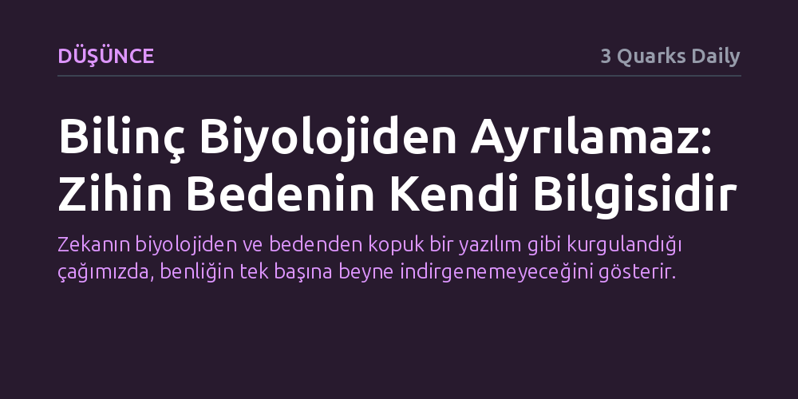

DUSUNCE · 3 Quarks Daily · 2026-10-13
İnsan düşüncesi zekayı biyolojiden bağımsız bir töz sanarak yanılgıya düşerken, bilincin kökeni bedensel farkındalıkta yatar. Bilinç soyut bir zihinsel cevher değil, bedenin kendi durumunu bilme ve başkalarından ayrışma sürecidir.
Zekanın biyolojiden ve bedenden kopuk bir yazılım gibi kurgulandığı çağımızda, benliğin tek başına beyne indirgenemeyeceğini gösterir.

İnsanlık yüzyıllardır canlılığı maddeden ayıran gizemli bir öz, yaşamı tek başına açıklayacak bir "yaşamsal cevher" arayışında olmuştur. Ancak düşünce tarihindeki bu köklü eğilim, çoğu zaman zihni ve canlılığı mekanik dünyadan bütünüyle yalıtılmış mistik bir varlık gibi kurgulayan büyük bir yanılgıya dönüşmüştür. Günümüzde bu kadim hata, zekanın ve bilincin biyolojik yaşamdan kolayca ayrılabileceği varsayımıyla yeni bir güç kazanmaktadır.
Özellikle yapay zekanın yükselişiyle birlikte, zihinsel süreçlerin organik dokudan ve bedensel gerçeklikten bağımsız algoritmik bir yapı olduğu yanılsaması derinleşmektedir. Oysa zekayı onu var eden biyolojik organizmadan ayırmak, canlının dünyayla kurduğu temel ilişkiyi gözden kaçırmak anlamına gelir. Zihin, havada asılı duran soyut bir bilgi işlem aygıtı değildir.
Bilinç kavramının tarihsel ve dilbilimsel kökenlerine inildiğinde, zihnin sanıldığı gibi soyut bir kapalılık değil, ilişkisel bir süreç olduğu görülür. Kavramın Latince kökeni kelimesi kelimesine "birlikte bilmek" anlamına gelir; bu ifade ise Hint-Avrupa dillerinde bir şeyi ayırmak, bölmek veya sınır çizmek anlamını taşıyan çok daha eski bir eyleme dayanır. Yani bilinç, doğası gereği hem bir ayrışmayı hem de bir ortaklığı barındırır.
Aristoteles sonrası dönemde biçimlenen bu anlayışa göre, bilinçli olmak hem başkalarını tanıyıp bu sayede kendini bilmek hem de belki de başka hiç kimsenin bilmediği bir içsel deneyime sahip olmak demektir. Dolayısıyla bilinç, salt içe dönük bir soyutlama değil; bilginin farklılaşması ve farkın bizzat bilinmesidir. Özneyi var eden şey, çevresiyle ve diğerleriyle kurduğu bu sınır çekme edimidir.
Tüm bu kavramsal çerçeve, bilincin beyne sıkışmış izole bir merkezden ibaret olmadığını ortaya koyar. Bilinç, zannedildiği gibi bedenden kopuk çalışan bağımsız bir kontrol kulesi değil; bizzat bedenin kendi durumuna dair sahip olduğu bilginin bilgisi olarak kavrandığında anlam kazanır. Canlı organizma, kendi biyolojik süreçlerini hissettikçe ve bu içsel durumu fark ettikçe benlik duygusu inşa edilir.
Beyin benliğin üretildiği bir organ olsa da bedenin duyumlarından, fizyolojik dengesinden ve hayatta kalma mekanizmalarından soyutlanamaz. Zihni bedensiz bir beyne veya salt hesaplama gücüne indirgemek, bilincin biyolojik evrimini ve yaşamsal zeminini inkar etmektir. Kısacası insan, yalnızca düşünen bir beyin değil, hissettiğini bilen canlı bir bedendir.